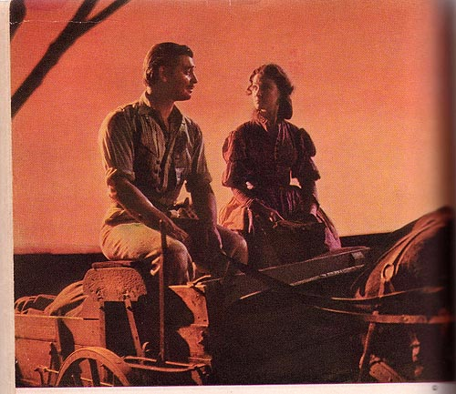

Illustration for Gone with the Wind: Motion Picture Edition
(New York: The Macmillan Company, 1940)
CAPTION: "The front seat was only a narrow plank across the sides of the wagon. With Rhett beside her, she did not fear anything, neither the fire nor the noise nor the Yankees. (See page 144)"